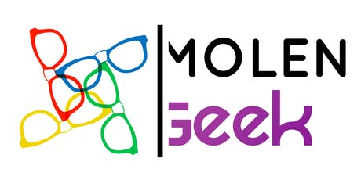
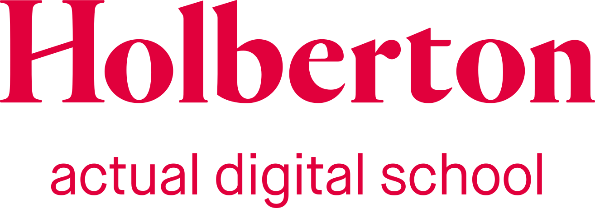
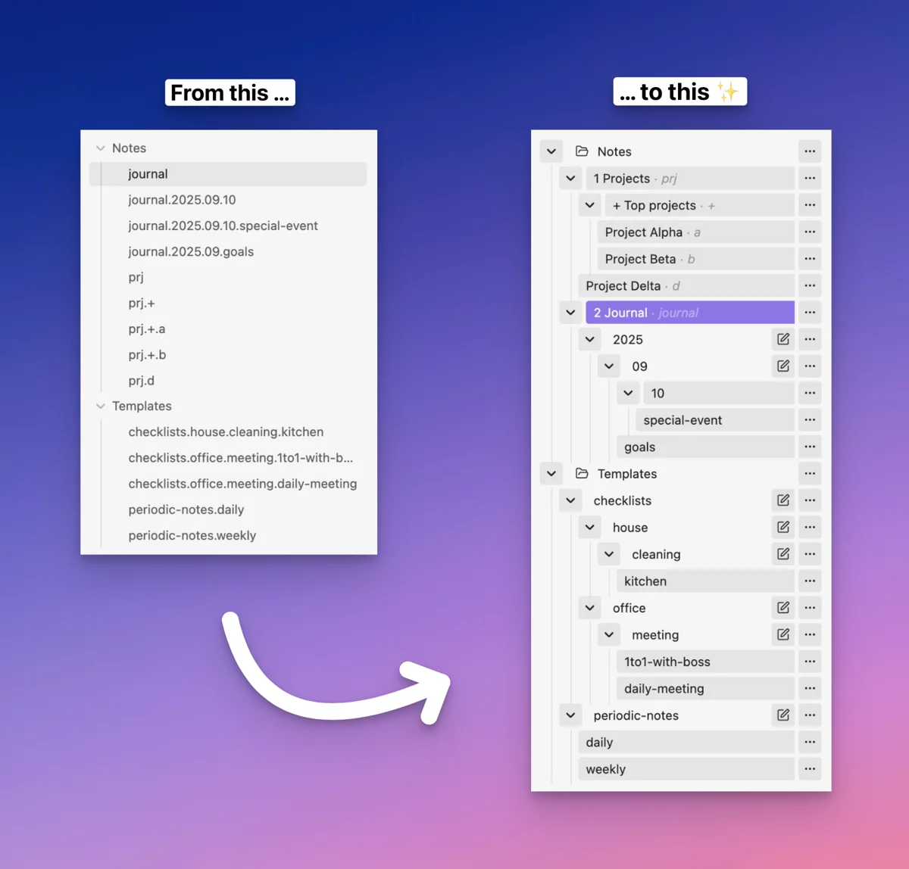
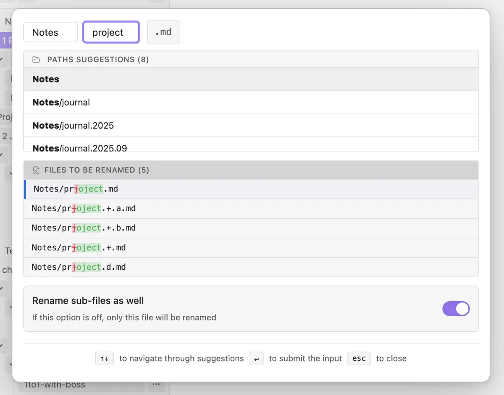

Comprendre d’abord
Votre besoin, vos utilisateurs et votre contexte passent avant la solution technique.
Intervention technique · diagnostic & suivi
Je suis Jean Z. Sordes. Je vous aide à débloquer votre projet et à faire avancer votre entreprise.
Je mène le travail technique et vous accompagne dans vos choix. Vous gardez la main sur les décisions.
Réserver un échange gratuit de 30 minVotre projet, votre blocage, vos mots. On commence simplement.
Conférences & interventions sur l’IAJean, enchanté !Ingénieur · pédagogue · entrepreneur
Intervention urgente · On se retrousse les manches
Votre projet prend feu ?
Vous n’êtes plus seul.
Votre application bloque, une fonctionnalité ne répond plus ou les bugs s’accumulent ? Vous m’expliquez ce qui se passe, et on se retrousse les manches ensemble.
Je vous aide à comprendre ce qui coince, j’interviens sur le projet et nous vérifions ensemble le résultat attendu. On éteint le feu pour vous permettre d’avancer à nouveau.
Un échange gratuit de 30 minutes sur Notion Calendar.
L’intervention
payante est convenue ensuite, ensemble.
Vous réservez l’échange gratuit et préparez le contexte : votre projet, le blocage, vos tentatives et ce que vous voulez pouvoir faire.
J’examine le projet et les accès nécessaires. Nous convenons du résultat, du prix et du calendrier avant de commencer.
Je guide la recherche des causes et réalise les corrections techniques. Vous apportez le contexte et vos retours, sans avoir besoin de coder.
Nous validons le parcours concerné. Je vous explique les changements et vous donne les informations utiles pour poursuivre.
Comprendre, prioriser, progresser
Diagnostic et suivi.
Comprendre ce qu’il faut améliorer et
préparer la suite.
Je prends le temps de comprendre votre entreprise, votre projet et vos besoins. Ensemble, nous identifions les améliorations utiles, choisissons les priorités et planifions les prochaines étapes. Je vous accompagne ensuite dans leur mise en œuvre avec du conseil, du coaching et un suivi.
Vous gardez la décision finale. Nous définissons ensemble le rythme et le périmètre ; les éventuelles interventions opérationnelles sont cadrées séparément.
Préparons un diagnosticÉchange gratuit de 30 minutes sur Notion Calendar.
Ma manière de travailler
Le bon choix est celui qui aide votre entreprise à avancer. Pas forcément celui qui demande le plus de code.
Votre besoin, vos utilisateurs et votre contexte passent avant la solution technique.
Ce qui fonctionne, les compromis et les incertitudes : vous avez les éléments pour décider.
Une solution existante peut être la meilleure option, même si elle rend mon intervention inutile.
Vous ou votre équipe gagnez en autonomie. Le projet devient plus facile à reprendre et à transmettre.
Speaker · IA & usages concrets
J’interviens aussi sur l’IA, ses usages et les méthodes pour mieux travailler avec elle. Comme sur BX1, j’aime rendre ces sujets accessibles.
Me proposer une conférence ou une interventionLa technique, avec un humain à vos côtés
Ingénieur logiciel, pédagogue et entrepreneur.
J’aime relier les choix techniques à ce qui compte pour votre entreprise : les utilisateurs, les coûts et la capacité à faire avancer votre projet.
Mon rôle : prendre le temps de comprendre, rendre les choses claires et vous aider à poursuivre sans dépendre de moi pour chaque décision.
Quelques étapes de mon parcours

Formation et campus
Formation technique Développement Java · mission SNCF Fret
Développement Java · mission SNCF Fret
Molengeek, via Wikimedia Commons · CC BY-SA 4.0, sans modification.
Master MIAGE · Informatique et gestion d’entreprise · Toulouse III, 2022
Retrouver mon parcours sur LinkedInUne expérience de terrain
J’ai accompagné une personne dont l’application créée avec Lovable accumulait les chargements sans fin, les redirections et les fonctionnalités défaillantes. J’ai repris le projet, travaillé sur sa structure et installé des méthodes pour continuer, puis accompagné un développeur dans le passage de relais.
Un récit personnel anonymisé, sans témoignage ni résultat chiffré vérifiable. Il illustre mon travail sur un projet existant et la préparation du passage de relais.
Du code à des outils concrets
Trois outils pour Obsidian, une application de prise de notes. Découvrez les projets et ce qu’ils permettent de faire.
Projet 1 sur 3 : Dot Navigator
Faites défiler les projets horizontalement ou choisissez un nom. Au clavier, utilisez les flèches lorsque la galerie a le focus.

Plugin Obsidian · Organisation des notes
Retrouver son chemin dans une grande collection de notes. Le plugin les organise en arborescence et permet de déplacer ou renommer une branche avec ses sous-notes.
Mon travail : développement du plugin, navigation hiérarchique, suggestions de notes et interface de renommage.

Un raccourci. Le texte complet.
Plugin Obsidian · Automatisation
Remplacer de courts raccourcis par des textes réutilisables pendant la saisie, sur ordinateur ou mobile.
Mon travail : développement de l’expansion de texte, des déclencheurs configurables et de l’exécution de commandes Obsidian.
Des notes reliées. Un suivi commun.
Plugin Obsidian · Suivi du travail
Suivre des tâches liées à plusieurs tableaux, des actions récurrentes et des opportunités commerciales, en gardant les notes comme source d’information.
Mon travail : développement du moteur de suivi, des tableaux de bord et de la configuration des workflows.
Première version publiée · Interfaces en français
Indicateurs relevés le sur GitHub et dans les statistiques publiques d’Obsidian. Les téléchargements incluent les mises à jour et ne représentent pas un nombre d’utilisateurs actifs.
Voir mes autres projets sur GitHubQuelques réponses avant de commencer
Non. Vous expliquez le contexte, ce qui devrait fonctionner et vos tentatives avec vos mots. Je mène le travail technique ; vous participez par vos informations, vos retours et la validation du résultat.
Ces 30 minutes servent à comprendre votre situation et à préparer Vibe Pompier ou le diagnostic et le suivi Vibe Doctor. Nous vérifions le projet et les accès utiles, puis convenons d’une proposition avant engagement. Réserver cet échange ne commande pas une mission payante.
Oui, Vibe Pompier comprend les corrections du blocage convenu. Nous définissons ensemble le résultat attendu et comment le vérifier. Si votre demande nécessite une analyse approfondie ou une refonte plus large, je vous l’explique et vous propose un périmètre adapté avant engagement.
Nous examinons votre projet, sa complexité et les accès nécessaires avant de nous engager. Cela nous permet de convenir d’une intervention adaptée à votre environnement et à mon périmètre.
La correction convenue, une explication des changements et les informations utiles pour poursuivre. Nous vérifions ensemble le parcours concerné. La mise en production ou la remise prête à déployer est précisée dans la proposition.
Nous convenons du résultat à livrer, du prix, de la date de démarrage et du calendrier avant de commencer. Vous pouvez décider à partir d’une proposition claire, adaptée au blocage et à la valeur de sa résolution.
Vibe Pompier répond à un blocage précis sur un projet existant. Vibe Doctor vous aide à comprendre les besoins et les possibilités, à choisir les priorités, à planifier et à suivre leur mise en œuvre dans la durée, avec du conseil et du coaching. Les usages utiles de l’IA font partie des opportunités à explorer. Vous gardez la décision finale ; les interventions techniques sont cadrées avant engagement.
Le premier pas, c’est une conversation.
30 minutes gratuites pour préparer Vibe Pompier ou faire le premier pas avec Vibe Doctor, à partir de votre situation et de vos objectifs.
Avant notre échange, préparez quelques phrases sur votre projet ou
votre blocage.
Ne partagez pas de données confidentielles.
Choisissez votre créneau dans Notion Calendar. La réservation et sa confirmation sont gérées par ce service.
Pas de créneau adapté ou un souci de réservation ? Retrouvez-moi sur LinkedIn.
Un premier échange sans engagement. Le périmètre et le prix de la mission sont convenus avant de commencer.